Unidad 4: Modelos de Series de Tiempo
Departamento de Economía, Universidad Diego Portales
Algunos ejemplos:
El consumo agregado y el PIB de un país (20 años de observaciones trimestrales = 80 observaciones).
El tipo de cambio Pesos/US$ (datos diarios por 1 año = 365 observaciones.
La horas promedio trabajadas en una semana representativa (datos anuales desde 1990 a 2016 = 27 observaciones)
Nota: Un aspecto central respecto de corte transversal es que los datos siguen un orden particular: el tiempo.
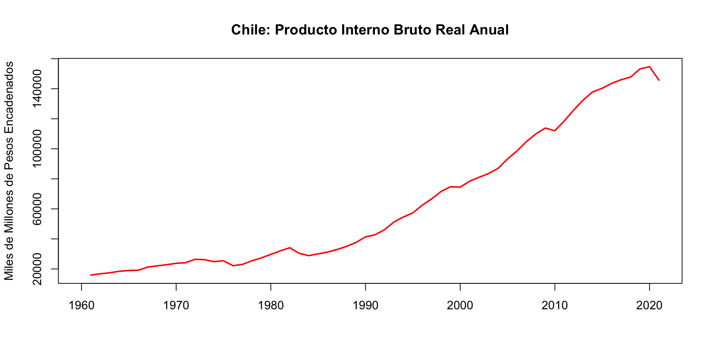
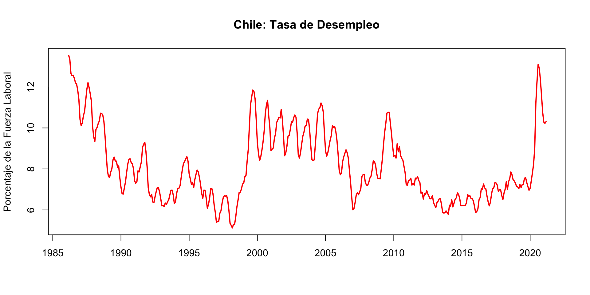
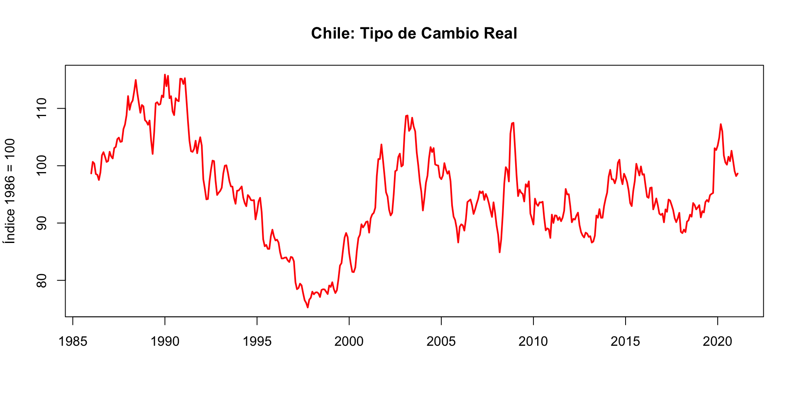
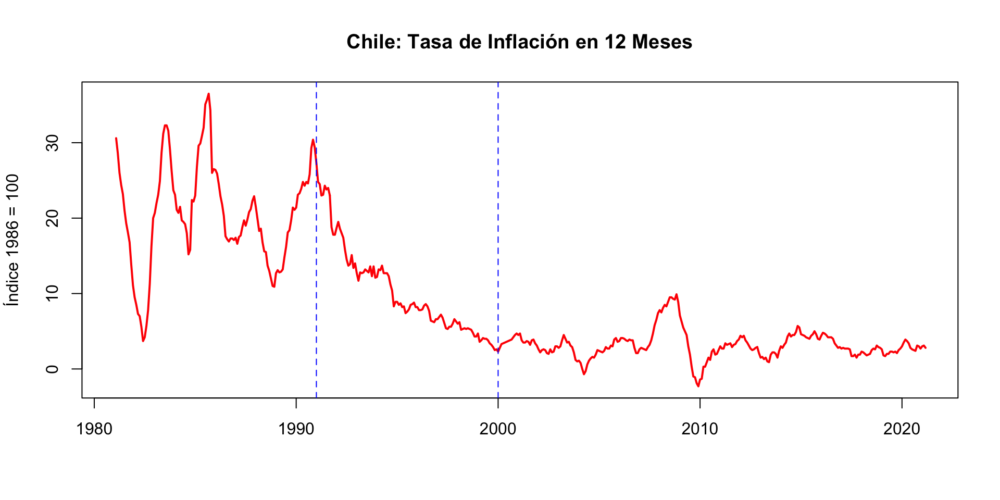
Fuertes tendencias.
Difícil de distinguir tendencias y ciclos.
Ciclos estocásticos, difíciles de predecir.
Comportamientos estacionales marcados.
Oscilaciones muy erráticas, no hay tendencias ni ciclos obvios.
Covariaciones sugerentes.
Cambios estructurales.
Note que cada \(y_{t}\) es una variable aleatoria y tendrá su propia función de distribución \(F(r)=p(y\leq r)\) con sus correspondientes momentos (\(E(y_{t}),V(y_{t}),...\)).
Para caracterizar un proceso estocástico en un período \(1\) a \(T\) debemos especificar las funciones de distribución conjunta de estas variables (\(F(y_{1},y_{2},...,y_{T})\)).
Consideramos sólo observaciones consecutivas y equidistantes. La distancia en el tiempo se denomina frecuencia: anual, trimestral, mensual, semana, diaria.
Ejemplo: \(PIB_{2007}=62,793,469\) millones de pesos es una realización del PGD (en función a factores económicos, políticos, metereológicos, etc).
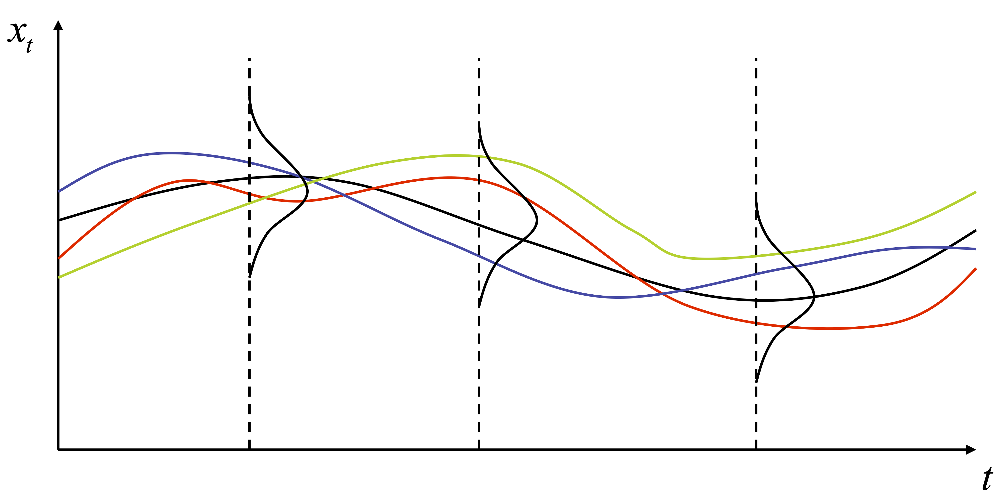
Las series de tiempo introducen la dimensión temporal. Esto hace que debamos preocuparnos de aspectos como:
Rezagos y adelantos en el tiempo.
Correlación serial o autocorrelación.
Cálculo de errores estándar en presencia de correlación serial.
Estacionariedad
Una buena forma de aprender sobre el comportamiento de las series de tiempo es observando datos y tratando de encontrar patrones. Una buena fuente de datos:
www.bcentral.cl.El primer rezago de \(y_{t}\) es \(y_{t-1}\).
El rezago j-esimo de \(y_{t}\) es \(y_{t-j}\).
La primera diferencia, \(\Delta y_{t}\), es el cambio entre los períodos \(t-1\) y \(t\): \[\Delta y_{t}=y_{t}-y_{t-1}\]
La primer diferencia del logaritmo de \(y_{t}\) es: \[\Delta\ln y_{t}=\ln y_{t}-\ln y_{t-1}\]
La tasa de crecimiento entre los periodos \(t-1\) y \(t\) es: \[g_{y}=\frac{y_{t}-y_{t-1}}{y_{t-1}}\times100\] y puede ser aproximada (para cambios pequeños) por: \(g_{y}=\Delta\ln y_{t}\times100\)
Se denomina autocorrelación a la correlación entre una serie de tiempo y sus valores rezagados.
Definimos la primera autocovarianza como: \[\mathbb{Cov}(y_{t},y_{t-1})=\mathbb{E}\left[\left(y_{t}-\mathbb{E}[y_{t}]\right)\left(y_{t-1}-\mathbb{E}[y_{t-1}]\right)\right]\]
La primera autocorrelación se define entonces como: \[\rho_{1}=\mathbb{Corr}(y_{t},y_{t-1})=\frac{\mathbb{Cov}(y_{t},y_{t-1})}{\sqrt{\mathbb{V}(y_{t})\mathbb{V}(y_{t-1})}}\]
Estas correlaciones están definidas en el PGD, esto es son “poblacionales”. Describen la distribución conjunta entre \(y_{t},y_{t-1}\).
De la misma forma definimos la j-esima covarianza y la j-esima correlación. \[\mathbb{Cov}(y_{t},y_{t-j})=\mathbb{E}\left[\left(y_{t}-\mathbb{E}[y_{t}]\right)\left(y_{t-j}-\mathbb{E}[y_{t-j}]\right)\right]\] \[\rho_{j}=\mathbb{Corr}(y_{t},y_{t-j})=\frac{\mathbb{Cov}(y_{t},y_{t-j})}{\sqrt{\mathbb{V}(y_{t})\mathbb{V}(y_{t-j})}}\]
Describimos la distribución conjunta entre \(y_{t},y_{t-j}\) en el PGD o la “población”.
La j-esima autocorrelación muestral es el estimador de la j-esima autocorrelación poblacional: \[\hat{\rho}_{j}=\frac{\widehat{\mathbb{Cov}(y_{t},y_{t-j})}}{\widehat{\mathbb{V}(y_{t})}}\] donde: \[\widehat{\mathbb{Cov}(y_{t},y_{t-j})}=\frac{1}{T}\sum_{t=j+1}^{T}(y_{t}-\bar{y}_{j+1,T})(y_{t-j}-\bar{y}_{1,T-j})\]
\(\bar{y}_{j+1,T}\) es el promedio muestral de \(y_{t}\) calculado con las observaciones \(t=j+1,...,T\).
El concepto de estacionariedad nos indica que la historia es relevante (es clave para validez externa).
Nota: Estacionaridad implica que el futuro es parecido al pasado, al menos en un sentido probabilístico. Discutiremos esto más adelante.
Definición alternativa, más débil pero más práctica:
Un proceso estocástico \(y_{t}\) es débilmente estacionario o estacionario en covarianza si y solo si:
\(\mathbb{E}\left[y_{t}\right]=\mu<\infty,\,\,\,\forall t\)
\(\mathbb{V}(y_{t})=\mathbb{E}\left[(y_{t}-\mathbb{E}[y_{t}])^{2}\right]=\gamma_{0}<\infty,\,\,\,\forall t\)
\(Cov(y_{t},y_{t-j})=\mathbb{E}\left[(y_{t}-\mathbb{E}[y_{t}])(y_{t-j}-\mathbb{E}[y_{t-j}])\right]=\gamma_{j}<\infty,\,\,\,\forall t,\forall j\)
Interpretación:
Predicción.
Ejemplo 1: Cuánto será el crecimiento del PIB el próximo año?
Ejemplo 2: Cuánto será el aumento de costos futuros en el sistema de salud?
Estimación de Efectos causales dinámicos.
Ejemplo 1: Qué sucede con la tasa de inflación si el Banco Central aumenta la tasa de inflación y la tasa de desempleo a 3 meses y a 12 meses?
Ejemplo 2: Cuál es el efecto en el tiempo de la reforma tributaria sobre las variables macroeconómicas?
Para realizar cálculos específicos con series de tiempo (como rezagos, adelantos, tendencias y efectos estacionales, etc) tendremos que definir explícitamente la estructura de nuestros datos.
En R, hay varios tipos de series de tiempo. La distinción más importante se relaciona con si los datos están equidistantes entre sí en el tiempo o no.
Las series de tiempo equidistantes en el tiempo se recopilan en puntos regulares en el tiempo (ejemplos: datos mensuales, trimestrales o anuales. En R, estos datos se almacenan de manera eficiente en el tipo de variable ts (time series).
Las series de tiempo irregulares tienen distancias variables (ejemplos datos financiero diarios o por horas. Trabajaremos principalmente con datos equidistantes. Hay varios paquetes para declarar series de tiempo irregulares, los más importantes son xts (extended time series) y zoo.
Objetos tipo ts, para series de tiempo que son equidistantes en el tiempo, se definen de la siguiente manera:
datos puede ser un vector, una matriz, o una base de datos.
c(año, periodo) es un vector con el año de inicio y el periodo intra anual de inicio (1 a 4 para series trimestrales, 1 a 12 para series mensuales, etc.)
num_frec es un número que representa la frecuencia con la que se observa la serie de tiempo en un año: 2 para datos semestrales, 4 para datos trimestrales, 12 para datos mensuales, 52 para datos semanales, etc.
Funciones específicas a este tipo de datos.
El paquete lubridate permite trabajar de forma bien conveniente con fechas en R (permite entre otras cosas convertir texto en fechas, hacer cálculos entre fechas, obtener ciertos componentes de una fecha).
Para transformar una variable en formato fecha usamos funciones como ymd(), mdy(), qy(), etc (ver la ayuda para los distintos formatos de fecha):
Nota: la variable a transformar puede ser un vector.
En ocasiones tenemos diferentes componentes de una fecha en diferentes variables (por ejemplo, variables año, mes y día). En este caso usamos la función make_datetime().
Es posible extraer distintos componentes de una fecha usando funciones como year(), month(), mday(), etc:
Contar con variables en formato adecuado de fechas va a ser muy útil para aquellas series de tiempo que son irregulares (sólo días de semana por ejemplo). Usando el paquete xts tenemos:
El paquete xts nos da funciones similares a ts pero que pueden lidiar con series de tiempo que son irregulares: lag.xts() y diff.xts().
Para extraer las observaciones de una serie de tiempo para un sub-periodo usamos la función window().
Si start o end no son provistos la función usa la fecha inicial o final, respectivamente.
Para agrupar series de tiempo, manteniendo el periodo de tiempo común entre series de tiempo, usamos la función ts.intersect().
Para agrupar series de tiempo, manteniendo el periodo de tiempo que engloba ambas series de tiempo, usamos la función ts.union().
Note que las observaciones faltantes serán relledadas con NA.
Las autocovarianzas y autocorrelaciones se pueden calcular a diferentes rezagos usando al función acf().
donde typo_stat puede ser "correlation" o "covariance"; num_rez indica que se usaran los rezagos 1 a num_rez; plot = TRUE indica que se generará un gráfico con los resultados.
Las covarianzas y correlaciones cruzadas entre dos series de tiempo se pueden calcular a diferentes rezagos usando al función ccf().
Las mismas opciones anteriores aplican también a esta función.
Para cambiar la frecuencia de una serie de tiempo, por ejemplo llevarla de mensual a trimestral, usamos la función aggregate() y una función de agregación (por ejemplo sum o mean).
Predecir e identificar efectos causales son tareas completamente distintas.
Para la predicción:
\(\overline{R}^{2}\) importa mucho. Recuerde que: \[\bar{R}^{2}=1-\left[\frac{(1-R^{2})(N-1)}{N-K-1}\right]\] con \(N\) el número de observaciones y \(K\) el número de parámetros de pendiente estimados.
Sesgo por variables omitidas no es un problema.
No hay necesidad de interpretar los parámetros.
Validez externa del modelo es clave: el modelo estimado con datos del pasado debe ser válido en el futuro.
Un punto de partida natural para predecir el futuro de \(y_{t}\) es usar sus valores pasados \(y_{t-1},y_{t-2,}y_{t-3},...\)
Un modelo autoregresivo (AR) es un modelo de regresión en el cual corremos una regresión entre \(y_{t}\) sobre sus valores pasados.
El número de rezagos usados en la regresión determina el orden del modelo autoregresivo.
AR(1) o primer orden: regresión de \(y_{t}\) sobre \(y_{t-1}\).
AR(2) o segundo orden: regresión de \(y_{t}\) sobre \(y_{t-1}\) y \(y_{t-2}\).
AR(p) u orden \(p\): regresión de \(y_{t}\) sobre \(y_{t-1}\), \(y_{t-2}\), ... y \(y_{t-p}\).
El modelo AR(1) poblacional: \[y_{t}=\beta_{0}+\beta_{1}y_{t-1}+u_{t}\]
El modelo AR(1) puede se estimado por MCO, en la regresión de \(y_{t}\) sobre \(y_{t-1}\). ¿Cómo luce el estimador del parámetro \(\beta_{1}\)?
Los parámetros \(\beta_{0}\) y \(\beta_{1}\) no tienen una interpretación causal.
El test de hipótesis \(H_{0}:\beta_{1}=0\) contra \(H_{1}:\beta_{1}\neq0\) responde a la pregunta si la información pasada es útil o no para la predicción.
Las predicciones o proyecciones se definen fuera de la muestra. Se relacionan con valores futuros.
Definimos \(y_{T+1|T}\) como la predicción de \(y_{T+1}\) condicional en la información hasta \(T\) (\(y_{T},y_{T-1},...\)) y usando los parámetros poblacionales.
Definimos \(\hat{y}_{T+1|T}\) como la predicción de \(y_{T+1}\) condicional en la información hasta \(T\) (\(y_{T},y_{T-1},...\)) y usando los parámetros estimados con \(T\) datos.
Para el modelo AR(1) tenemos: \[\begin{aligned} y_{T+1|T} & = \beta_{0}+\beta_{1}y_{T}\\ \hat{y}_{T+1|T} & = \hat{\beta}_{0}+\hat{\beta}_{1}y_{T} \end{aligned}\]
El error de predicción un período adelante se define como: \[e_{1}^{f}=y_{T+1}-\hat{y}_{T+1|T}\]
La distinción entre el error de predicción y el residuo de regresión sigue la misma lógica fuera y dentro de la muestra.
El modelo AR(p) poblacional: \[y_{t}=\beta_{0}+\beta_{1}y_{t-1}+\beta_{2}y_{t-2}+...+\beta_{p}y_{t-p}+u_{t}\]
El modelo AR(p) usa \(p\) rezagos de la variable dependiente.
Como antes, los parámetros \(\beta_{1}\) a \(\beta_{p}\) no tienen interpretación causal.
El test de hipótesis: \[H_{0}:\beta_{i}=\beta_{i+1}=...=\beta_{p}=0\] indica que los rezagos de \(i\) hasta \(p\) no tienen información útil para predecir \(y_{t}\) (usamos un test \(F\) o un test \(t\) dependiendo del número de restricciones)
Otra alternativa es determinar los rezagos usando los criterios de información.
El problema de elegir modelos con mucho rezagos no existe en este caso ya que en los criterios de información esta implícita la disyuntiva entre ajuste vs. grados de libertad.
Existen dos criterios de información, el Criterio de Bayes (BIC) y el Criterio de Akaike (AIC).
El primer término es siempre decreciente en \(p\) (un \(p\) grande siempre mejora el ajuste).
El segundo término es siempre creciente en \(p\).
La varianza de predicción dada por el error de estimación es creciente en \(p\), por tanto no es buena idea predecir con un modelo con mucho rezagos.
Este término es una penalidad al uso de muchos parámetros.
Al minimizar el \(BIC(p)\) elegimos el mejor valor de \(p\).
La interpretación es la misma que en el criterio \(BIC(p)\).
La diferencia está en que el término de penalidad es más pequeño para el criterio \(AIC(p)\): \[(p+1)\frac{2}{T}<(p+1)\frac{\ln T}{T}\]
Por esto el criterio \(AIC(p)\) estima mayores rezagos que el criterio \(BIC(p)\).
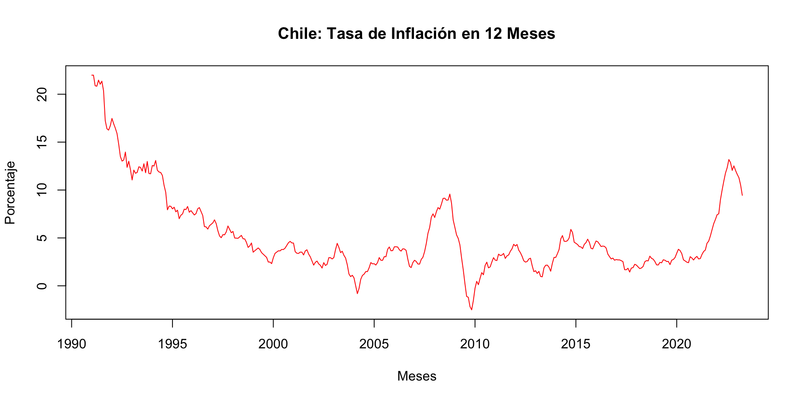
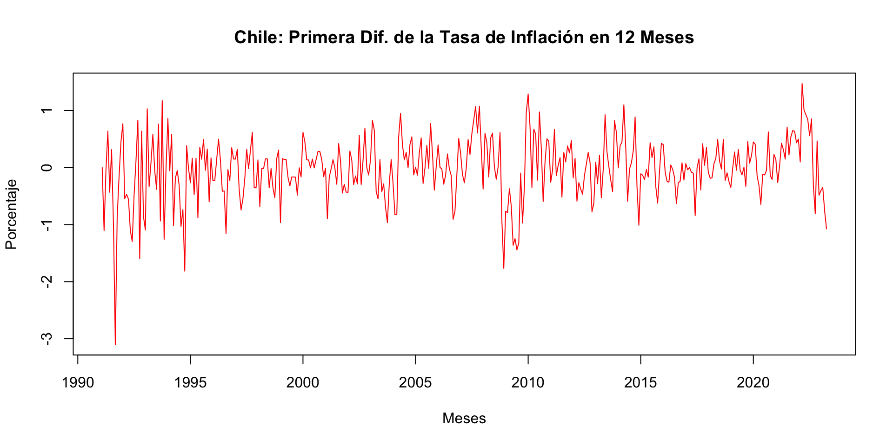
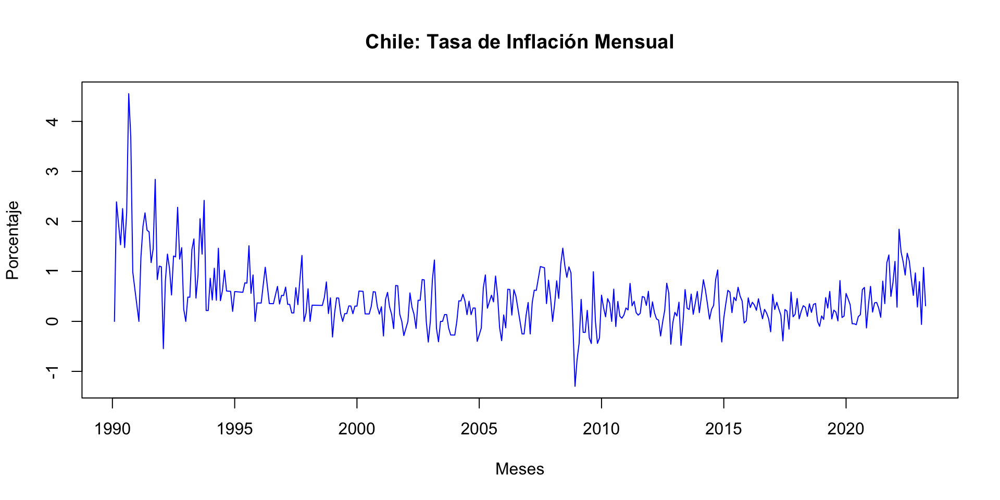
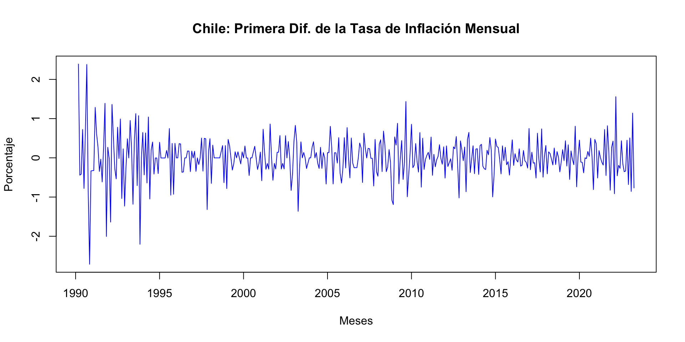
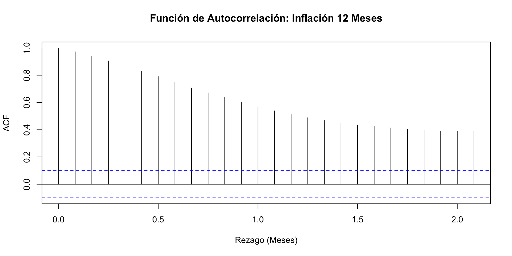
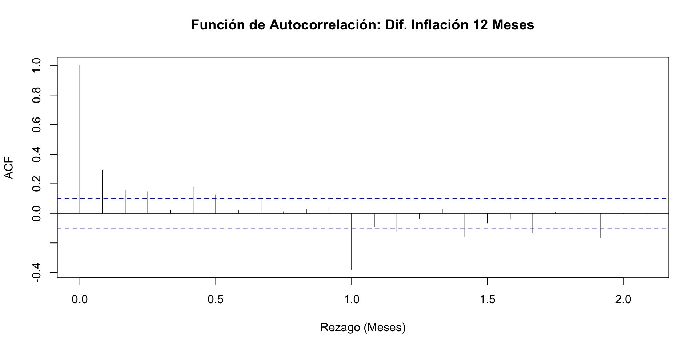
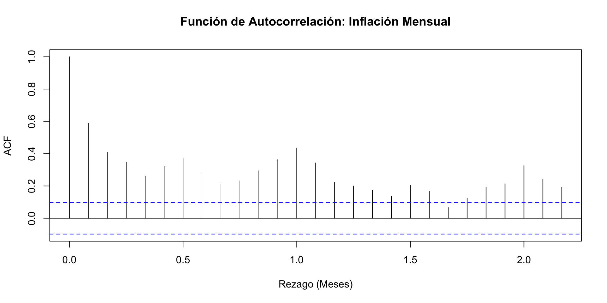
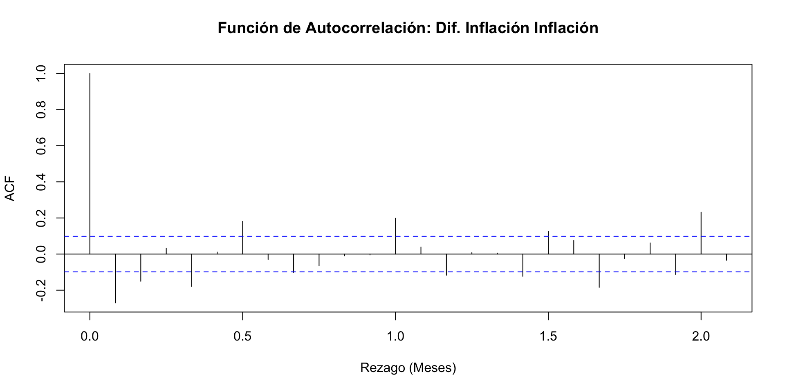
| Orden AR | AIC | BIC |
|---|---|---|
| 1 | 304.623 | 315.527 |
| 2 | 285.571 | 300.110 |
| 3 | 278.810 | 296.984 |
| 4 | 265.854 | 287.663 |
| 5 | 259.398 | 284.841 |
| 6 | 260.922 | 290.000 |
Time series regression with "ts" data:
Start = 2000(1), End = 2023(4)
Call:
dynlm(formula = dinf ~ L(dinf, 1:5), start = c(2000, 1))
Residuals:
Min 1Q Median 3Q Max
-1.8407 -0.2089 -0.0088 0.2175 1.1683
Coefficients:
Estimate Std. Error t value Pr(>|t|)
(Intercept) 0.002303 0.022660 0.102 0.91911
L(dinf, 1:5)1 -0.492348 0.059806 -8.232 7.54e-15 ***
L(dinf, 1:5)2 -0.456208 0.064204 -7.106 1.04e-11 ***
L(dinf, 1:5)3 -0.341962 0.067489 -5.067 7.44e-07 ***
L(dinf, 1:5)4 -0.305636 0.064292 -4.754 3.23e-06 ***
L(dinf, 1:5)5 -0.177496 0.061236 -2.899 0.00405 **
---
Signif. codes: 0 '***' 0.001 '**' 0.01 '*' 0.05 '.' 0.1 ' ' 1
Residual standard error: 0.3791 on 274 degrees of freedom
Multiple R-squared: 0.2416, Adjusted R-squared: 0.2278
F-statistic: 17.46 on 5 and 274 DF, p-value: 5.243e-15Hasta ahora hemos considerado modelos de predicción que suponen que sólo el pasado de la misma variable es relevante.
Sin embargo, tiene sentido que otras variables \(x\) puedan tener información relevante para predecir \(y\).
Usando esta idea tenemos: \[y_{t}=\beta_{0}+\beta_{1}y_{t-1}+...+\beta_{p}y_{t-p}+\delta_{1}x_{t-1}+...+\delta_{r}x_{t-r}+u_{t}\]
Este es un modelo autoregresivo de retardos distribuidos con \(p\) rezagos de \(y\) y \(r\) rezagos de \(x\): \(ARD(p,q)\)
Ejemplo: Inflación y Desempleo. Curva de Phillips: si la tasa de desempleo está por encima de la tasa natural, entonces la tasa de inflación aumentará.
De esta forma, \(\Delta inf_{t}\) debería estar relacionada con valores pasados de la tasa de desempleo y el coeficiente debiera ser negativo.
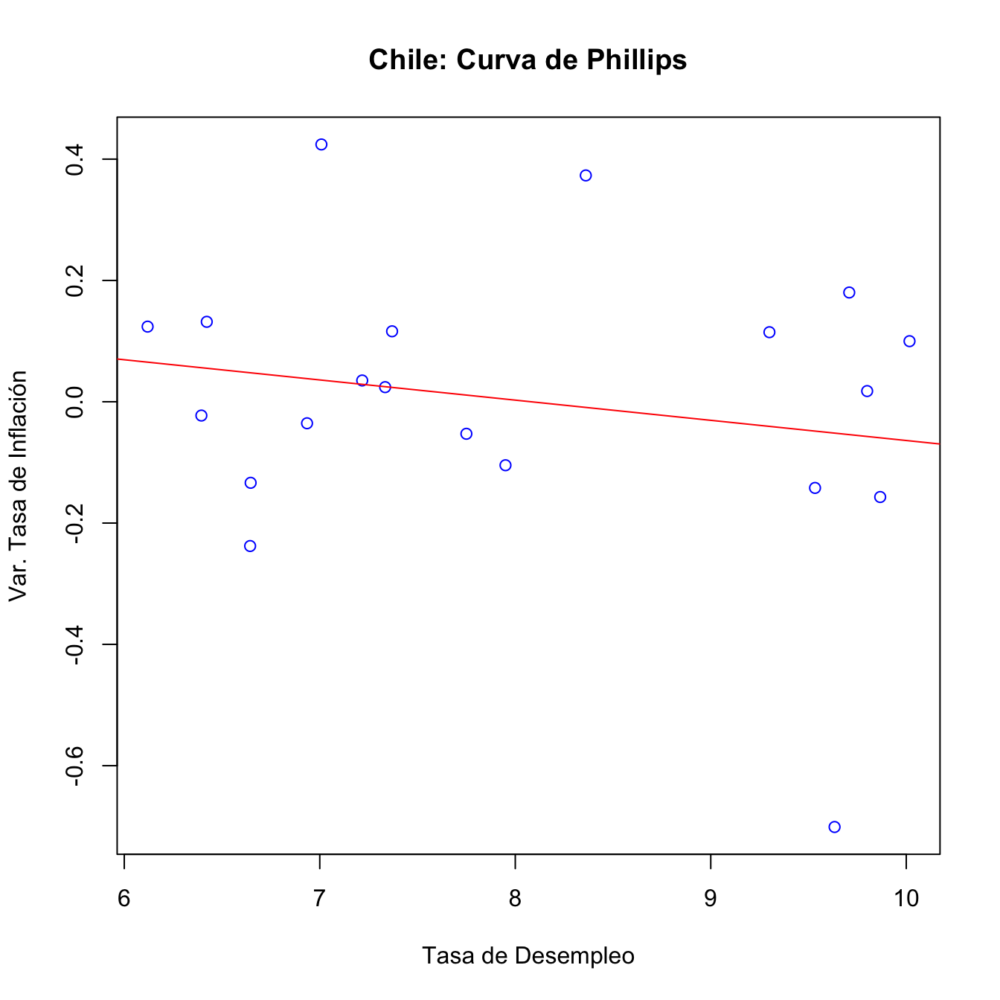
Time series regression with "ts" data:
Start = 2000(1), End = 2023(4)
Call:
dynlm(formula = dinf ~ L(dinf, 1:5) + L(td.t, 1:2), start = c(2000,
1))
Residuals:
Min 1Q Median 3Q Max
-1.85775 -0.21830 -0.00462 0.20182 1.15678
Coefficients:
Estimate Std. Error t value Pr(>|t|)
(Intercept) 0.001779 0.122544 0.015 0.9884
L(dinf, 1:5)1 -0.510657 0.060563 -8.432 2.02e-15 ***
L(dinf, 1:5)2 -0.468640 0.064525 -7.263 4.00e-12 ***
L(dinf, 1:5)3 -0.349630 0.067634 -5.169 4.55e-07 ***
L(dinf, 1:5)4 -0.299739 0.064351 -4.658 5.00e-06 ***
L(dinf, 1:5)5 -0.172455 0.061216 -2.817 0.0052 **
L(td.t, 1:2)1 0.106945 0.059929 1.785 0.0755 .
L(td.t, 1:2)2 -0.106801 0.059689 -1.789 0.0747 .
---
Signif. codes: 0 '***' 0.001 '**' 0.01 '*' 0.05 '.' 0.1 ' ' 1
Residual standard error: 0.3783 on 272 degrees of freedom
Multiple R-squared: 0.2506, Adjusted R-squared: 0.2313
F-statistic: 12.99 on 7 and 272 DF, p-value: 2.042e-14El Test de Causalidad a la Granger indaga en si una variable \(x\) tiene poder predictivo (información relevante) sobre la variable \(y\). Recuerde: \[y_{t}=\beta_{0}+\beta_{1}y_{t-1}+...+\beta_{p}y_{t-p}+\delta_{1}x_{t-1}+...+\delta_{r}x_{t-r}+u_{t}\] T.C.G. es un test F sobre para probar: \(H_{0}:\delta_{1}=...=\delta_{r}=0\)
En el caso de nuestro modelo ARD para la inflación:
Linear hypothesis test
Hypothesis:
L(td.t,2)1 = 0
L(td.t,2)2 = 0
Model 1: restricted model
Model 2: dinf ~ L(dinf, 1:5) + L(td.t, 1:2)
Res.Df RSS Df Sum of Sq F Pr(>F)
1 274 39.383
2 272 38.919 2 0.46399 1.6214 0.1995Generalización del Criterio de Bayes para los Modelos ARD
Definamos como \(K\) el número total de coeficientes estimados en el modelo (intercepto + rezagos de \(y\) + rezagos de \(x\)). El criterio de Bayes es: \[BIC(K)=\ln\left(\frac{SRC(K)}{T}\right)+K\frac{\ln T}{T}\]
Se podrías calcular este criterio para todas las combinaciones posibles de rezagos \(p\) y rezagos \(r\).
En la práctica, elegimos el \(AR(p)\) para \(y\) y decidimos si incluir rezagos de \(x\) usando el test de Causalidad de Granger.
¿Porqué necesitamos una medida de incertidumbre? Para construir intervalos de confianza de la predicción.
Estos intervalos dan una idea del grado de precisión que deberíamos esperar de la predicción.
Consideremos la predicción de un modelo ARD(1,1): \[\hat{y}_{T+1|T}=\hat{\beta}_{0}+\hat{\beta}_{1}y_{T}+\hat{\delta}_{1}x_{T}\]
El error de predicción es: \[y_{T+1}-\hat{y}_{T+1|T}=u_{T+1}-\left[\left(\hat{\beta}_{0}-\beta_{0}\right)+\left(\hat{\beta}_{1}-\beta_{1}\right)y_{T}+\left(\hat{\delta}_{1}-\delta_{1}\right)x_{T}\right]\]
El error de predicción cuadrático medio es:
\[\begin{aligned} E\left(y_{T+1}-\hat{y}_{T+1|T}\right)^{2} & = E\left[u_{T+1}^{2}\right]\\ & + E\left[\left(\hat{\beta}_{0}-\beta_{0}\right)+\left(\hat{\beta}_{1}-\beta_{1}\right)y_{T}+\left(\hat{\delta}_{1}-\delta_{1}\right)x_{T}\right]^{2} \end{aligned}\]Entonces: \[EPCM=Var(u_{T+1})+\Theta\] con \(\Theta\) la incertidumbre asociada a errores de estimación.
Cuando la muestra es grande tenemos que: \(Var(u_{T+1})>>\Theta\) y por tanto: \(EPCM\approx Var(u_{T+1})\)
Definamos también la raíz del error de predicción cuadrático medio: \[REPCM=\sqrt{E\left(y_{T+1}-\hat{y}_{T+1|T}\right)^{2}}\]
Esta es una medida de dispersión de la distribución del error de predicción (es de hecho una desviación estándar, pero para la predicción).
Entonces es una medida de la magnitud de una error de predicción típico.
Para proximar el \(REPMC\) usar la varianza del error de regresión \[\widehat{REPCM} = \sqrt{\hat{\sigma}_{u}^{2}}\]
Si \(u_{T+1}\) tiene una distribución normal, entonces el intervalo de la predicción al 95% se puede construir como: \[\hat{y}_{T+1|T}\pm1.96\times\widehat{REPCM}\]
El intervalo para la predicción no es un intervalo de confianza (\(\hat{y}_{T+1}\) no es un coeficiente no aleatorio, sino es en efecto aleatorio).
El intervalo anterior es válido sólo bajo el supuesto de normalidad. Sin embargo, su uso es muy común.
Se pueden construir intervalos de predicción a distintos porcentajes (70%, 80%, 90%, 95%, 99%).
ar():
Call:
ar(x = window(dinf, start = c(2000, 1)), order.max = 5)
Coefficients:
1 2 3 4 5
-0.4902 -0.4563 -0.3401 -0.3040 -0.1735
Order selected 5 sigma^2 estimated as 0.1439predict() con la opción n.ahead:Supongamos un modelo AR(1): \[y_{t} = \phi_{0}+\phi_{1}y_{t-1}+\epsilon_{t}\]
La predicción un período adelante es:
\[\begin{aligned} y_{T+1} & = \phi_{0}+\phi_{1}y_{T}+\epsilon_{T+1}\\ y_{T+1|T} & = E[\phi_{0}+\phi_{1}y_{T}+\epsilon_{T+1}|y_{T},y_{T-1},..]\\ & = \phi_{0}+\phi_{1}y_{T} \end{aligned}\]La predicción dos período adelante es: \(y_{T+2|T} = \phi_{0}+\phi_{0}\phi_{1}+\phi_{1}^{2}y_{T}\)
La predicción \(j\) períodos adelante es: \(y_{T+j|T} = \phi_{0}(1+\phi_{1}+\phi_{1}^{2}+...+\phi^{j-1})+\phi_{1}^{j}y_{T}\)
Note que la calidad de la predicción disminuye mientras más lejos está \(j\): \[\lim_{j\rightarrow\infty}y_{T+j|T}=\frac{\phi_{0}}{1-\phi_{1}}\] La predicción es la media del proceso.
El error de predicción (de la predicción \(j\) períodos adelante) se define como: \(e_{T}(j)=y_{T+j}-y_{T+j|T}\). Para diferentes horizontes de predicción tenemos:
\[\begin{aligned} e_{T}(1) & = y_{T+1}-\left(\phi_{0}+\phi_{1}y_{T}\right)=\epsilon_{T+1}\\ e_{T}(2) & = y_{T+2}-\left(\phi_{0}+\phi_{0}\phi_{1}+\phi_{1}^{2}y_{T}\right)=\epsilon_{T+2}+\phi\epsilon_{T+1}\\ & \vdots\\ e_{T}(j) & = \epsilon_{T+j}+\phi_{1}\epsilon_{T+j-1}+\phi_{1}^{2}\epsilon_{T+j-2}+...+\phi_{1}^{j-1}\epsilon_{T+1} \end{aligned}\]La Varianza del Error de Predicción es: \[V(e_{T}(j))=\sigma^{2}\left(1+\phi_{1}^{2}+\phi_{1}^{4}+...+\phi_{1}^{2(j-1)}\right)\]
Entonces podemos construir un Intervalo de Confianza (a cada horizonte) para juzgar la precisión de la predicción:
\[\begin{aligned} j=1 & : & \left(\phi_{0}+\phi_{1}y_{T}\right)\pm Z_{\alpha/2}\sqrt{\sigma^{2}}\\ j=2 & : & \left(\phi_{0}+\phi_{0}\phi_{1}+\phi_{1}^{2}y_{T}\right)\pm Z_{\alpha/2}\sqrt{\sigma^{2}\left(1+\phi_{1}^{2}\right)}\\ & \vdots\\ j=k & : & \left(\phi_{0}(1+\phi_{1}+\phi_{1}^{2}+...+\phi^{k-1})+\phi_{1}^{k}y_{T}\right)\\ & & \pm Z_{\alpha/2}\sqrt{\sigma^{2}\left(1+\phi_{1}^{2}+\phi_{1}^{4}+...+\phi_{1}^{2(k-1)}\right)} \end{aligned}\]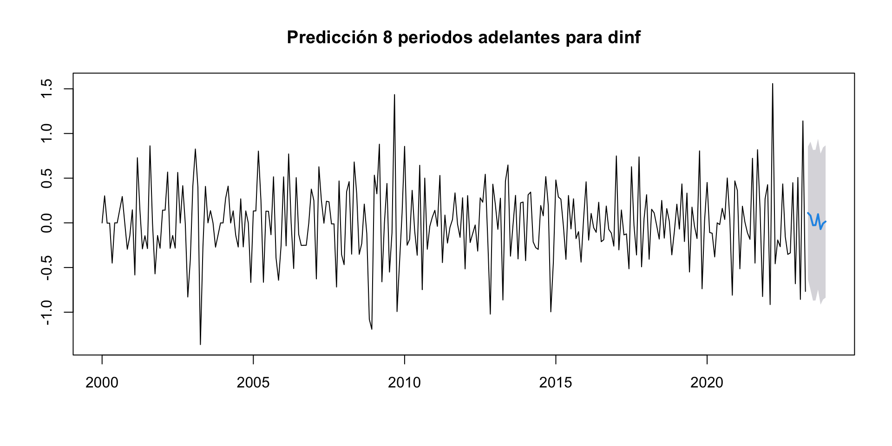
Consideremos las siguientes series de tiempo: \(y\), \(z_1\), \(z_2\), …, \(z_k\). Un modelo estático representa una relación contemporánea y es: \[y_{t}=\beta_{0}+\beta_{1} z_{1t}+...+\beta_{k} z_{kt}+u_{t}, \ \ \ t=1,2, \ldots, T\]
Diferenciando totalmente: \[y_t - y_{t-1} = \Delta y_{t}=\beta_{1} \Delta z_{1t}+...+\beta_{k} \Delta z_{kt}+ \Delta u_{t}\]
El efecto ceteris paribus de \(z_1\) sobre \(y\) se da cuando \(\Delta z_{2t} = ... = \Delta z_{kt} = \Delta u_{t} = 0\), entonces: \[\Delta y_{t}=\beta_{1} \Delta z_{1t} \rightarrow \frac{\Delta y}{\Delta z_{1t}} = \beta_1\]
El efecto ceteris paribus es un efecto contemporáneo o inmediato.
En un modelo RDF(q) con dos series de tiempo \(y\) y \(z\): \[y_{t}=\alpha_{0}+\delta_{0} z_{t}+\delta_{1} z_{t-1}+...+\delta_{q} z_{t-q}+u_{t}, \ \ \ t=1,2, \ldots, T\]
Diferenciando totalmente: \[y_t - y_{t-1} = \Delta y_{t} = \delta_{0} \Delta z_{t}+ \delta_{1} \Delta z_{t-1} + ...+\delta_{q} \Delta z_{t-q} + \Delta u_{t}\]
Efecto ceteris paribus de un cambio permanente en \(z\) en \(t\) sobre \(y\): \(\Delta z_t \neq 0\), \(\Delta u = 0\) para todo \(t\) y \(\Delta z_{t - j} = \Delta z_{t+j} = 0\) para todo \(j>0\). \[ \begin{aligned} \Delta y_{t} &= \color{#ee6c4d}{\delta_{0} \Delta z_{t}}+ \delta_{1} \Delta z_{t-1} + \delta_{2} \Delta z_{t-2} + ...+\delta_{q} \Delta z_{t-q} + \Delta u_{t} \\ \Delta y_{t+1} &= \delta_{0} \Delta z_{t+1}+ \color{#ee6c4d}{\delta_{1} \Delta z_{t}} + \delta_{2} \Delta z_{t-1} + ...+\delta_{q} \Delta z_{t+1-q} + \Delta u_{t+1} \\ \Delta y_{t+2} &= \delta_{0} \Delta z_{t+2}+ \delta_{1} \Delta z_{t+1} + \color{#ee6c4d}{\delta_{2} \Delta z_{t}} + ...+\delta_{q} \Delta z_{t+2-q} + \Delta u_{t+2} \\ \vdots \end{aligned} \]
El efecto ceteris paribus es:
Efecto en \(t\) es \(\frac{\Delta y_t}{\Delta z_{t}} = \delta_0\) (multiplicador de impacto).
El efecto un periodo adelante es \(\frac{\Delta y_{t+1}}{\Delta z_{t}}= \delta_1\) (multiplicador un periodo adelante).
El efecto un periodo adelante es \(\frac{\Delta y_{t+2}}{\Delta z_{t}}= \delta_2\) (multiplicador dos periodos adelante).
Nota: Una alta correlación entre entre \(z\) y sus rezagos (multicolinealidad) hace difícil obtener estimadores precisos de cada \(\delta\) individual. No obstante, a menudo se pueden obtener buenas estimaciones de la \(PLP\).
Ejemplo: La tasa de fertilidad podría depender de excepciones tributarias, pero por razones biológicas y psicológicas el efecto podrías darse con rezago. \[tf_t = \alpha_0 + 0.15 et_t + 0.3 et_{t-1} + 0.1 et_{t-2} + 0.05 et_{t-3} + u_t\] donde \(tf\) es la tasa de fertilidad (niños nacidos / 1000 mujeres) y \(e_t\) son las exempciones tributarias.
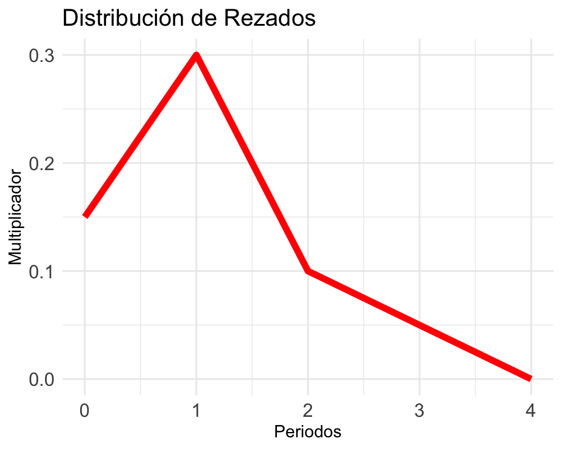
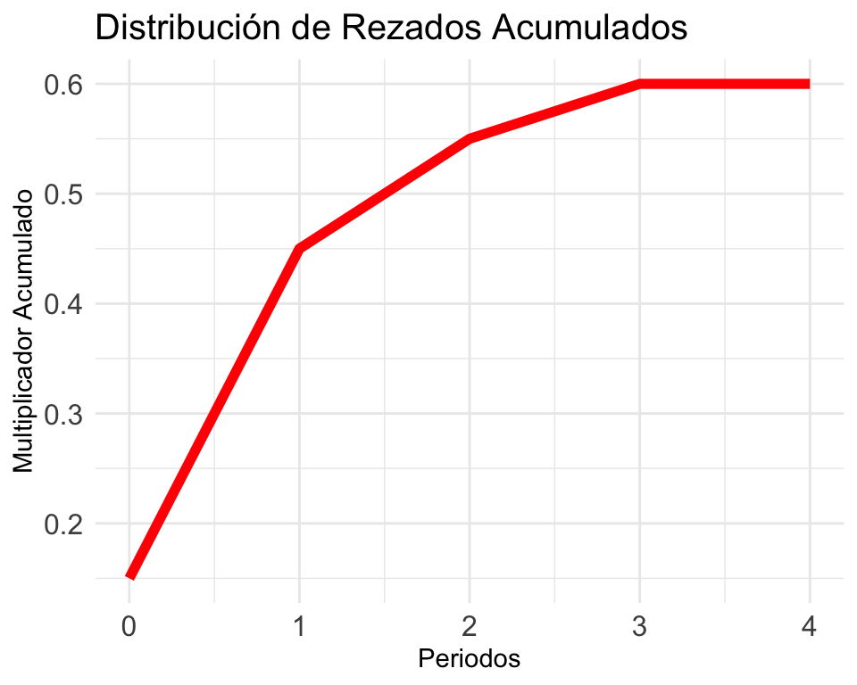
Usamos MCO para estimar tanto el modelo estático como el de rezagos distribuidos finitos.
Supuestos:
Linealidad en Parámetros
No hay colinealidad perfecta
Media condicional del error cero
Homocedasticidad y No autocorrelación en los errores.
Normalidad en los errores
Nota: Como antes, bajo los supuestos 1 a 3 MCO es insesgado. Agregando 4 MCO es ficiente (MELI). Además, agregando 6 toda los procedimientos de inferencia aplican.
Media condicional cero: \(\mathbb{E}\left(u_{t} \mid \mathbf{X}\right)=0, t=1,2, \ldots, T\)
Definamos la matriz completa de las variables dependientes: \[\mathbf{X}=\left(\begin{array}{cccc} x_{11} & x_{12} & \cdots & x_{1 K} \\ \vdots & \vdots & \cdots & \vdots \\ x_{t 1} & x_{t 2} & \cdots & x_{t K} \\ \vdots & \vdots & & \vdots \\ x_{T 1} & x_{T 2} & \cdots & x_{T K} \end{array}\right)\]
Exogeneidad débil: las variables explicativas y el error no correlacionan de manera contemporánea: \(\mathbb{Corr}(x_{tj},u_t ) = 0\), para toda \(j\).
Exogeneidad estricta: las variables explicativas y el error nunca correlacionan \(\mathbb{Corr}(x_{kj},u_t ) = 0\), para toda \(j\) y \(k\). No existe retroalimentación del futuro sobre la variable dependiente hoy.
Consideremos el siguiente modelo estático: \[inf_t =\beta_0 + \beta_1 unem_t + u_t\]
¿Disyuntiva a c/p entre inflación y desempleo?
\(H_0: \beta_1 = 0\) y \(H_1: \beta_1 < 0\).
Estimate Std. Error t value Pr(>|t|)
(Intercept) 1.0535656 1.5479571 0.6806168 0.49902205
unem 0.5023782 0.2655624 1.8917519 0.06389167Según esta regresión, no existe una disyuntiva ya que \(\beta_1=0.5>0\).
El estadístico \(t=0.5/0.27=1.85\) para \(H_0: \beta_1 = 0\) permite rechazar la hipótesis nula al 10%.
¿Problemas?
El resultado hallado es contrario a la teoría. ¿Los supuestos del modelo clásico se cumplen?
Nota: \(u_t\) contiene shocks monetarios, shocks de demanda, shocks de oferta, shocks en el tipo de cambio, entre otros.
S1 restrictivo pero buena aproximación.
S2 no es problema si \(unemp\) varia en el tiempo.
S3 \(\mathbb{E}(u_t|unem_1,...,unem_T)=0\) es probable de ser violado (el estimador sería sesgado).
En algunas ocasiones es útil hacer transformaciones para cambiar la interpretación de los parámetros a estimar. Ejemplo con un RDF(2): \[y_t = \alpha + \beta_0 x_t + \beta_1 x_{t-1} + \beta_2 x_{t-2} + u_t\] tenemos el multiplicador de impacto y los multiplicadores a 1 y 2 periodos.
Sumar y restar \(\beta_0 x_{t-1}\) al lado derecho: \[y_t = \alpha + \beta_0 (x_t - x_{t-1}) + (\beta_0 + \beta_1) x_{t-1} + \beta_2 x_{t-2} + u_t\]
Sumar y restar \((\beta_0 + \beta_1) x_{t-2}\) al lado derecho: \[y_t = \alpha + \beta_0 (x_t - x_{t-1}) + (\beta_0 + \beta_1) (x_{t-1} - x_{t-2}) + (\beta_0 + \beta_1 + \beta_2) x_{t-2} + u_t\]
El modelo RDF transformado queda como: \[y_t = \alpha + \gamma_0 \Delta x_t + \gamma_1 \Delta x_{t-1} + \gamma_2 x_{t-2} + u_t\]
Note que los parámetros estimados ahora son efectos acumulados:
\(\gamma_0 = \beta_0\): multiplicador de impacto.
\(\gamma_1 = \beta_0 + \beta_1\): efecto acumulado un periodo adelante.
\(\gamma_2 = \beta_0 + \beta_1 + \beta_2\): efecto acumulado dos periodos adelante (efecto de largo plazo)
Esta transformación es muy útil para realizar pruebas de hipótesis sobre efectos acumulados y funciona en general para modelo RDF(q). \[y_t = \alpha + \gamma_0 \Delta x_t + \gamma_1 \Delta x_{t-1} + ...+ \gamma_{q-1} \Delta x_{t-(q-1)} + \gamma_q x_{t-q} + u_t\]
Whittington, Alm y Peters (1990): Efecto de exenciones tributarias personales (deducciones por jardín infantil o educación básica) sobre la tasa de fertilidad.
\[g f r_{t}=\beta_{0}+\beta_{1} p e_{t}+ \beta_{2} pe_{t-1} + \beta_{3} pe_{t-2} + \beta_{4} ww2_{t}+\beta_{5} pill_{t}+u_{t}\] donde:
\(gfr\): número de niños nacidos por cada 1000 mujeres.
\(pe\): valor en dólares reales de la exención personal.
\(ww2= 1\) si años de 1941 a 1945 (Segunda Guerra Mundial).
\(pill=1\) si 1963 en adelante (salió al mercado la píldora anticonceptiva).
Estimate Std. Error t value Pr(>|t|)
(Intercept) 95.870497467 3.2819571 29.21138071 1.022560e-38
pe 0.072671828 0.1255331 0.57890569 5.646848e-01
L(pe) -0.005779582 0.1556629 -0.03712883 9.704979e-01
L(pe, 2) 0.033826844 0.1262574 0.26791971 7.896227e-01
ww2 -22.126497512 10.7319716 -2.06173649 4.329888e-02
pill -31.304988800 3.9815591 -7.86249501 5.633695e-11Los coeficientes en las variables son por separado es estadísticamente insignificantes.
Alta correlación entre \(pe_t\), \(pe_{t-1}\) y \(pe_{t-2}\) dificulta la estimación individual.
Test F de significancia conjunta \[H_0: \beta_{1} = \beta_{2} = \beta_{3}=0\] es 3.972964 con un p-value de 0.011652.
Multiplicador de largo plazo, \(MLP = \beta_{1} +\beta_{2} +\beta_{3}\), es 0.1007191.
Test F para la hipótesis \(H_0: \beta_{1} + \beta_{2} + \beta_{3}=0\) es 11.4212385 con un p-value de 0.0012408
Alternativamente: \[gfr_{t}=\beta_{0}+\beta^*_{1} \Delta pe_{t}+ \beta^*_{2} \Delta pe_{t-1} + \beta^*_{3} pe_{t-2} + \beta_{4} ww2_{t}+\beta_{5} pill_{t}+u_{t}\] con \(\beta^*_{3}\) el MLP.
Estimate Std. Error t value Pr(>|t|)
(Intercept) 95.87049747 3.28195707 29.2113807 1.022560e-38
diff(pe) 0.07267183 0.12553310 0.5789057 5.646848e-01
L(diff(pe)) 0.06689225 0.13163798 0.5081531 6.130930e-01
L(pe, 2) 0.10071909 0.02980267 3.3795323 1.240844e-03
ww2 -22.12649751 10.73197162 -2.0617365 4.329888e-02
pill -31.30498880 3.98155913 -7.8624950 5.633695e-11Para hacer inferencias causales debemo reconocer que ciertas series muestran tendencia en el tiempo.
Ignorar la existencia de tendencias conduce a conclusiones erróneas.
¿Qué clase de modelos estadísticos representan la tendencia?
Modelo de tendencia lineal
\[y_{t}=\alpha_{0}+\alpha_{1} t+u_{t}, t=1,2, \ldots\]
\(u_t\) es i.i.d. con \(\mathbb{E}(u_t)=0\) y \(\mathbb{V}(u_t)=\sigma^2\).
\(\alpha_1 = \Delta y_t\). El signo indica si la serie aumenta o disminuye en promedio (variación constante).
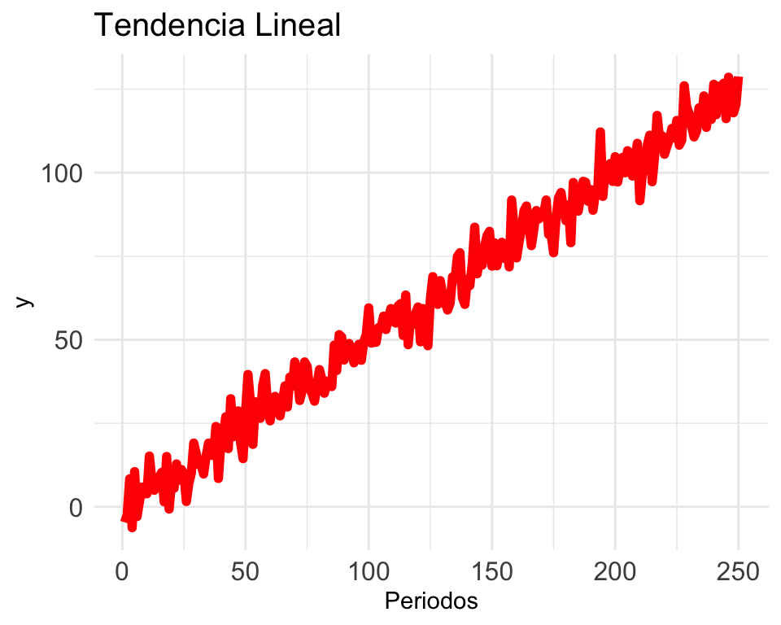
Modelo de tendencia exponencial
\[\log(y_{t})=\alpha_{0}+\alpha_{1} t+u_{t}, t=1,2, \ldots\] alternativamente:
\[y_{t}=e^{\alpha_{0}+\alpha_{1} t+u_{t}}, t=1,2, \ldots\]
\(u_t\) es i.i.d. con \(\mathbb{E}(u_t)=0\) y \(\mathbb{V}(u_t)=\sigma^2\).
\(\alpha_1 = \Delta \log(y_t) \approx \frac{y_t-y_{t-1}}{y_{t-1}}\). El signo indica si la serie crece o decrece en promedio (crecimiento porcentual constante).
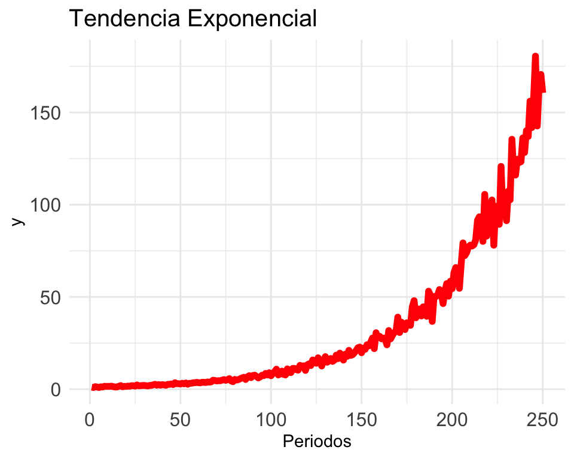
Tendencias más complejas
Por ejemplo, tendencias cuadráticas.
\[y_{t}=\alpha_{0} + \alpha_{1} t + \alpha_2 t^2 + u_{t}, t=1,2, \ldots\]
\(u_t\) es i.i.d. con \(\mathbb{E}(u_t)=0\) y \(\mathbb{V}(u_t)=\sigma^2\).
La pendiente aproximada: \(\frac{\Delta y_t}{\Delta t} = \alpha_1 + \alpha_2 t\).
Si \(\alpha_1>0\) y \(\alpha_2>0\) la pendiente de la tendencia aumenta aumentando.
Si \(\alpha_1>0\) y \(\alpha_2<0\) la tendencia tiene una forma de U invertida.
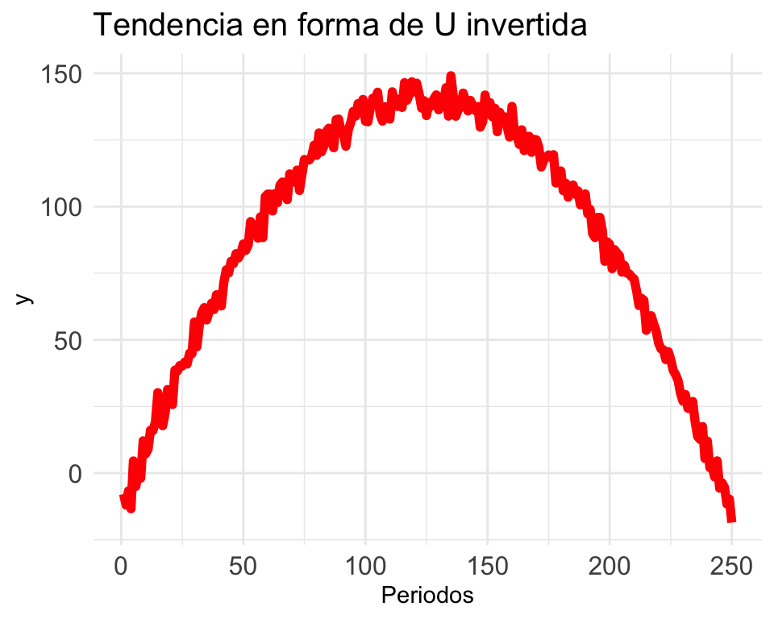
Nada respecto de las variables (explicadas o explicativa) con tendencia viola los supuestos 1 a 6.
El tipo de tendencia con el que trataremos es tendencia deterministica. Después analizaremos otro tipo de tendencia que puede generar no estacionariedad.
El problema surge con variable omitidas con tendencia que están correlacionadas con las variables explicativas.
Si ignora esta posibilidad podemos encontrar una relación falsa (sesgo). Este problema se conoce como regresión espuria.
La adición de una tendencia en el tiempo elimina este problema: \[y_t = \beta_0 + \beta_1 x_{1t} + ... + \beta_{Kt} x_{Kt} + \gamma t + u_t, t=1,2, \ldots\]
Incluir una tendencia en el modelo es equivalente a la eliminación previa de la tendencia en las series de datos originales.
En el modelo anterior \[y_t = \beta_0 + \beta_1 x_{1t} + ... + \beta_{Kt} x_{Kt} + \gamma t + u_t, t=1,2, \ldots\] interpretamos los estimadores MCO como descuentos de efectos parciales.
Podemos eliminar (“descontar”) la tendencia antes de estimar el modelo: \[y_t = \alpha_0 + \alpha_1 t + \tilde{y_t}, t=1,2, \ldots\] para todas las variables del modelo.
Luego usar MCO en el modelo (genera estimadores idénticos al modelo orginal): \[\tilde{y}_t = \beta_1 \tilde{x}_{1t} + ... + \beta_{Kt} \tilde{x}_{Kt} + \tilde{u}_t, t=1,2, \ldots\]
\(invpc\) es la inversión real en vivienda per cápita (en miles de dólares).
\(price\) es un índice del precio de vivienda (igual a 1 en 1982).
\(t\) es una tendencia lineal.
Este ejemplo busca resaltar al **importancia de controlar por la tendencia cuando las series muestra comportamientos ascendentes o descendentes en el tiempo, ya que la relación podría deberse únicamente a la presencia de tendencia (relación artificial o espurea).
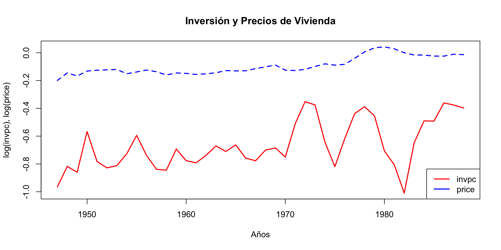
| Sin Tend | Con tend | Quitando Tend | |
|---|---|---|---|
| (Intercept) | -0.550*** | -0.913*** | |
| (0.043) | (0.136) | ||
| log(price) | 1.241** | -0.381 | |
| (0.382) | (0.679) | ||
| trend(ts.data) | 0.010** | ||
| (0.004) | |||
| resid(lprice_reg) | -0.381 | ||
| (0.662) |
Note: ^^ + p < 0.1, * p < 0.05, ** p < 0.01, *** p < 0.001
En la primera regresión, la elasticidad es grande y significativa (1.2409432). Debe ser cuidadoso aquí, porque la relación puede deberse solamente a la existencia de tendencia.
Al controlar por tendencia, regresión 2, la elasticidad estimada del precio es negativa (-0.3809613) y en términos estadísticos no es diferente de cero (el estadístico t para \(H_0: \beta = 0\) es -0.5611985).
Note que controlar por la tendencia es equivalente a eliminar primero la tendencia de las series.
Una serie de tiempo en frecuencia interanual (trimestral, mensual, semanal o diaria) puede presentar estacionalidad.
Una manera de modelar este fenómeno es permitir que el valor esperado de la serie de tiempo sea distinto (de forma deterministica) en cada periodo interanual.
Para lograr este objetivo podemos incluir variables binarias estacionales en el modelo de regresión.
Por ejemplo, si la serie de tiempo es mensual tenemos: \[y_t = \beta_0 + \beta_1 x_{1t} + ... + \beta_{Kt} x_{Kt} + \gamma_1 feb_t + ... + \gamma_{11} dic_t + u_t\] donde \(mes_t\) es 1 en el mes correspondiente y 0 en otro caso. Note que hemos omitido una variable binaria \(ene_t\) para evitar colinealidad perfecta.
Incluir variables binarias estacionales en una regresión es equivalente a la eliminación de la estacionalidad de los datos.
De igual forma que con la tendencia, podemos [eliminar (“descontar”) la estacionalidad] antes de estimar el modelo. \[y_t = \gamma_0 + \gamma_1 feb_t + ... + \gamma_{11} dic_t + \tilde{y_t}\] para todas las variables del modelo.
Luego MCO para el siguiente modelo genera los mismo estimadores que el modelo original. \[\tilde{y}_t = \beta_1 \tilde{x}_{1t} + ... + \beta_{Kt} \tilde{x}_{Kt} + \tilde{u}_t\]
Finalmente, alguna series de tiempo pueden presentar tendencias y patrones estacionales. En este caso se usa un modelo de regresión con una tendencia y variables binarias estacionales.
Krupp y Pollard (1996): Efectos de las demandas antidumping de las industrias químicas estadounidenses sobre la importación de diversas sustancias químicas.
Antecedentes:
Principios de los 80s: la industria de cloruro de bario en EEUU consideró que China estaba ofreciendo sus exportaciones a EEUU a precios injustamente bajos.
Interpusieron una demanda ante la Comisión Estadounidense de Comercio Internacional (CCI) en 10/1983 y la CCI falló a favor en 10/1984.
Modelo: \[\begin{eqnarray*} \log (chnimp) &=& \beta_0 + \beta_1 \log (chempi) + \beta_2 \log (gas) + \beta_3 \log (rtwex) \\ &+& \beta_4 befile6 + \beta_5 affile6 + \beta_6 afdec6 + \sum_{i=2}^{12} \delta_i s_{i,t} + u_t \end{eqnarray*}\]
Donde:
\(chnimp\): volumen de importaciones de cloruro de bario de China.
\(chempi\): índice de la producción química (controla por la demanda general de cloruro de bario)
\(gas\): volumen de la producción de gasolina (otra variable de demanda).
\(rtwex\): índice del tipo de cambio.
\(befile6=1\) si seis meses anteriores a la demanda.
\(affile6=1\) si seis meses posteriores a la demanda.
\(afdec6=1\) si seis meses que siguieron al fallo positivo.
Preguntas relevantes:
¿Las importaciones eran demasiado altas en el periodo anterior a la demanda inicial?
¿Las importaciones cambiaron de manera notable después de la demanda?
¿Cuál es la reducción en las importaciones luego del fallo?
| Sin SeasDum | Con SeasDum | Quitando Seas | |
|---|---|---|---|
| (Intercept) | -17.803 | 16.779 | |
| (21.045) | (32.429) | ||
| log(chempi) | 3.117*** | 3.265*** | |
| (0.479) | (0.493) | ||
| log(gas) | 0.196 | -1.278 | |
| (0.907) | (1.389) | ||
| log(rtwex) | 0.983* | 0.663 | |
| (0.400) | (0.471) | ||
| befile6 | 0.060 | 0.140 | |
| (0.261) | (0.267) | ||
| affile6 | -0.032 | 0.013 | |
| (0.264) | (0.279) | ||
| afdec6 | -0.565+ | -0.521+ | |
| (0.286) | (0.302) | ||
| season(ts.data)Feb | -0.418 | ||
| (0.304) | |||
| season(ts.data)Mar | 0.059 | ||
| (0.265) | |||
| season(ts.data)Apr | -0.451+ | ||
| (0.268) | |||
| season(ts.data)May | 0.033 | ||
| (0.269) | |||
| season(ts.data)Jun | -0.206 | ||
| (0.269) | |||
| season(ts.data)Jul | 0.004 | ||
| (0.279) | |||
| season(ts.data)Aug | -0.157 | ||
| (0.278) | |||
| season(ts.data)Sep | -0.134 | ||
| (0.268) | |||
| season(ts.data)Oct | 0.052 | ||
| (0.267) | |||
| season(ts.data)Nov | -0.246 | ||
| (0.263) | |||
| season(ts.data)Dec | 0.133 | ||
| (0.271) | |||
| resid(r_lchempi) | 3.265*** | ||
| (0.469) | |||
| resid(r_lgas) | -1.278 | ||
| (1.321) | |||
| resid(r_lrtwex) | 0.663 | ||
| (0.448) | |||
| resid(r_befile6) | 0.140 | ||
| (0.254) | |||
| resid(r_affile6) | 0.013 | ||
| (0.265) | |||
| resid(r_afdec6) | -0.521+ | ||
| (0.287) |
Note: ^^ + p < 0.1, * p < 0.05, ** p < 0.01, *** p < 0.001
El test F de \(H_0: \delta_2 = ... = \delta_{12} = 0\) es 0.8559459 con un p-value de 0.5851983.
\(befile6\) es positiva pero no es significativa. No hay evidencia de importaciones inusitadamente altas.
\(affile6\) es negativo pero es pequeño (indica una disminución de -3.2406368% en las importaciones).
\(afdec6\) muestra una disminución sustancial y significativa en las importaciones luego del fallo (aprox. -56.5244799%).
Note que incluir variable dummy estacionales es equivalente a eliminar el efecto estacional de todas las variables primero.
Los supuestos utilizados hasta ahora son demasiado restrictivos.
La exogeneidad estricta, la homocedasticidad y la ausencia de autocorrelación son requisitos muy exigentes para series de tiempo.
La inferencia estadística en los modelos se basa en la validez del supuesto de normalidad.
Si el tamaño de la muestra es grande se necesitan supuestos más débiles.
Recordemos: Un proceso estocástico \(y_{t}\) es débilmente estacionario o estacionario en covarianza si y solo si:
\(\mathbb{E}\left[y_{t}\right]=\mu<\infty,\,\,\,\forall t\)
\(\mathbb{V}(y_{t})=\mathbb{E}\left[(y_{t}-\mathbb{E}[y_{t}])^{2}\right]=\gamma_{0}<\infty,\,\,\,\forall t\)
\(Cov(y_{t},y_{t-j})=\mathbb{E}\left[(y_{t}-\mathbb{E}[y_{t}])(y_{t-j}-\mathbb{E}[y_{t-j}])\right]=\gamma_{j}<\infty,\,\,\,\forall t,\forall j\)
Importancia: Si se quiere entender la relación entre dos o más variables utilizando el análisis de regresión, se requiere dar por sentada algún tipo de estabilidad en el tiempo.
Nueva definición: serie de tiempo débilmente dependiente.
Un proceso estocástico \(y_{t}\) es débilmente dependiente si para todo \(t\), \(y_{t}\) es “casi independiente” de \(y_{t+h}\) con \(h\) que crece al infinitivo, esto es: \[Corr\left(y_{t}, y_{t+h}\right) \rightarrow 0 \text { cuando } h \rightarrow \infty\]
Discusión:
La correlación entre \(y_{t}\) y \(y_{t+h}\) debe converger a cero si \(h\) crece hasta el infinito.
La dependencia débil reemplaza el supuesto del muestreo aleatorio.
El teorema del central del límite requiere estacionariedad y alguna forma de dependencia débil.
Proceso autorregresivo de orden uno ya conocido, AR(1). \[y_{t}=\rho_{1} y_{t-1}+e_{t}, t=1,2, \ldots\] donde \(e_{t}\) es i.i.d. con media cero y varianza \(\sigma^2_e\).
\[\begin{eqnarray*} \mathbb{E}\left[y_{t}\right]&=&0 \\ \mathbb{V}\left[y_{t}\right]&=& \frac{\sigma_{e}^{2}}{1-\rho^2_1} \\ Cov(y_{t},y_{t-h})&=& \rho^h_1 \mathbb{V}\left[y_{t}\right]\\ Corr(y_{t},y_{t-h})&=& \rho^h_1 \end{eqnarray*}\]
Existen muchos tipos de series de tiempo débilmente dependientes. Para ilustrar el concepto solo usamos el AR(1).
Una serie con tendencia, aun cuando no sea estacionaria, puede ser débilmente dependiente
Una serie que es estacionaria alrededor de su tendencia en el tiempo y que además es débilmente dependiente se conoce como proceso estacionario con tendencia.
S1’: Linealidad en parámetros y dependencia débil Se supone que el modelo es exactamente el mismo que antes, pero ahora se añade el supuesto de que \({(y_t,x_{t1},..., x_{tk}): t = 1, 2,...}\) son todas estacionarias y débilmente dependientes.
S2’: No hay colinealidad perfecta En la muestra (y, por ende, en los procesos de series de tiempo subyacentes) no hay variables independientes que sean constantes ni que sean una combinación lineal perfecta de las otras.
S3’: Media condicional cero Las variables explicativas del modelo \(\mathbb{x}_t=(x_{t1},x_{t2},...,x_{tk})\) son contemporáneamente exógenas o \(\mathbb{E}(u_t | \mathbb{x}_t) = 0\).
Intuitivamente, \(\mathbb{E}(u_t | \mathbb{x}_t) = 0\) significa que las variables explicativas son no informativas de la media del error en el periodo corriente.
Este es el supuesto es mucho más débil que el supuesto de exogeneidad fuerte, ya que no impone restricciones sobre cómo se relaciona \(u_t\) con las variables explicativas en otros periodos.
Solo requeriremos que \(u_t\) tenga una media no condicional cero y no esté correlacionada con cada \(x_{tj}\): \[\mathbb{E}\left(u_{t}\right)=0, \operatorname{Cov}\left(x_{t j}, u_{t}\right)=0, j=1, \ldots, k\]
Teorema Bajo los supuestos 1’, 2’ y 3’, los estimadores de MCO son consistentes. Sea \(\hat{\beta}_{j}\) un estimador de \(\beta_{j}\) para una muestra de tamaño \(n\). \(\hat{\beta}_{j}\) es un estimador consistente si para todo \(\epsilon>0\), \(\Pr[|\hat{\beta}_{j}-\beta_{j}|>\epsilon]\rightarrow0\) cuando \(n\rightarrow\infty\). Alternativamente, se dice también que \(\beta_{j}\) es el límite en probabilidad de \(\hat{\beta}_{j}\), \(plim(\hat{\beta}_{j})=\beta_{j}\).
La exogeneidad estricta: descarta toda relación dinámica entre las variables explicativas y el término de error.
Modelo estático: \[y_{t}=\beta_{0}+\beta_{1} z_{t 1}+\beta_{2} z_{t 2}+u_{t}\]
Bajo la dependencia débil, la condición para consistencia: \[\mathbb{E}\left(u_{t} \mid z_{t 1}, z_{t 2}\right)=0\]
ST3’ no descarta la correlación entre \(u_{t-1}\) y \(z_{t1}\). Es válido suponer que \(z_{t1}\) es variable de política: \(z_{t 1}=\delta_{0}+\delta_{1} y_{t-1}+v_{t}\).
Modelo de rezagos distribuidos finitos: Consideremos el modelo: \[y_{t}=\alpha_{0}+\delta_{0} z_{t}+\delta_{1} z_{t-1}+\delta_{2} z_{t-2}+u_{t}\]
Un supuesto muy natural es \(\mathbb{E}\left(u_{t} \mid z_{t}, z_{t-1}, z_{t-2}, z_{t-3}, \ldots\right)=0\).
Cuando se determina que \(\mathbb{x}_t = (z_t, z_{t-1}, z_{t-2})\), esto es ningún rezago adicional aporta, el supuesto ST3’ se satisface y MCO serán consistentes.
3’ no descarta que \(y\) pueda influir en los valores futuros de \(z\).
Modelo autoregresivo: Consideremos ahora el modelo autorregresivo de orden uno, AR(1): \[y_{t}=\beta_{0}+\beta_{1} y_{t-1}+u_{t}\]
Suponemos que \(\mathrm{E}\left(u_{t} \mid y_{t-1}, y_{t-2}, \ldots\right)=0\). Como \(\mathbb{x}_t = y_{t-1}\), esto es ningún rezago adicional aporta información, el supuesto 3’ es válido.
El supuesto de exogeneidad estricta 3 no es válido: \(Cov\left(y_{t}, u_{t}\right)=\beta_{1} Cov\left(y_{t-1}, u_{t}\right)+\mathbb{V}\left(u_{t}\right)>0\). Entonces, MCO es sesgado pero consistente.
Supuesto 4’: Homocedasticidad Los errores son contemporáneamente homocedásticos, es decir, \(\mathbb{V}\left(u_{t} \mid \mathbf{x}_{t}\right)=\sigma^{2}\).
Supuesto 5’: No hay correlación serial Condicional en la variables explicativas en los periodos \(t\) y \(s\), los errores no están autocorrelacionados, esto es para todo \(t \neq s\) se cumple que \(Corr\left(u_{t} u_{s} | \mathbf{x}_{t} \mathbf{x}_{s}\right)=0\).
Los supuestos 4’ y 5’ condicionan sólo en las variables explicativas en el periodo corriente \(t\) y en los periodos que coinciden con \(t\) y \(s\), respectivamente.
Bajo 1’ a 5’, los estimadores de MCO son asintóticamente eficientes.
Nota: La correlación serial es un problema en los modelos de regresión estáticos y con rezagos distribuidos finitos.
Teorema Bajo los supuestos 1’ a 5’, los estimadores de MCO tienen distribuciones asintóticamente normales. Además, los errores estándar usuales de MCO, los estadísticos t y los estadísticos F son asintóticamente válidos.
Los resultados de consistencia y normalidad asintótica proporcionan una justificación para algunos de los ejemplos estimados en clases anteriores.
Aún cuando algunos de los supuestos del modelo lineal clásico no sean válidos, los estimadores de MCO siguen siendo consistentes, y los procedimientos de inferencia usuales son válidos.
Versión lineal de la curva de Phillips aumentada por expectativas: \[inf_{t}-inf_{t}^{e}=\beta_{1}\left(unem_{t}-\mu_{0}\right)+e_{t}\] con \(\mu_{0}\) la tasa natural de desempleo e \(inf_{t}^{e}\) la tasa de inflación esperada.
Disyuntiva a c/p entre la inflación no anticipada y el desempleo cíclico: \(\beta_1<0\).
Bajo las [expectativas adaptativas]{emph} \(inf_{t}^{e}=inf_{t-1}\).
Curva de Phillips a estimar: \[\Delta inf_{t}= \beta_{0}+\beta_{1} unem_{t}+e_{t}\] con \(\Delta inf_{t}=inf_{t}-inf_{t-1}\) y \(\beta_{0}=-\beta_{1} \mu_{0}\).
Time series regression with "ts" data:
Start = 1949, End = 2003
Call:
dynlm(formula = diff(inf) ~ unem, data = ts.data)
Coefficients:
(Intercept) unem
2.8282 -0.5176 Si Los supuesto 1’-5’ se cumplen, un incremento de un punto en la tasa de desempleo reduce la inflación no anticipada poco más de medio punto.
La tasa natural estimada es: 5.4635543.
Consideremos nuevamente el modelo general: \[y_{t}=\beta_{0}+\beta_{1} x_{t 1}+\ldots+\beta_{k} x_{t k}+u_{t}\] donde \(\mathbf{x}_{t}=\left(x_{t 1}, \ldots, x_{t k}\right)\) pueden o no contener rezagos de \(y\) o \(z\).
Por consistencia de MCO solo necesitamos que \(\mathbb {E}\left(u_{t} \mid \mathbf{x}_{t}\right)\), pero las \(u_t\) podría estar autocorrelacionadas.
Si suponemos además que \(\mathbb{E}\left(u_{t} \mid \mathbf{x}_{t}, y_{t-1}, \mathbf{x}_{t-1}, \ldots\right)=0\) entonces 3’ y 5’ será ambos válidos. Alternativamente tenemos que: \[\mathbb{E}\left(y_{t} \mid \mathbf{x}_{t}, y_{t-1}, \mathbf{x}_{t-1}, \ldots\right)=\mathbb {E}\left(y_{t} \mid \mathbf{x}_{t}\right)\]
Cuando esta condición se cumple, se tiene un modelo dinámicamente completo.
Un modelo dinámicamente completo debe satisfacer 5’.
Tomemos \(s<t\). Usando la ley de expectativas iteradas:
\[\begin{aligned} \mathbb{E}\left(u_{t} u_{s} \mid \mathbf{x}_{t}, \mathbf{x}_{s}\right) &=\mathbb{E}\left[\mathbb{E}\left(u_{t} u_{s} \mid \mathbf{x}_{t}, \mathbf{x}_{s}, u_{s}\right) \mid \mathbf{x}_{t}, \mathbf{x}_{s}\right] \\ &=\mathbb{E}\left[u_{s} \mathbb{E}\left(u_{t} \mid \mathbf{x}_{t}, \mathbf{x}_{s}, u_{s}\right) \mid \mathbf{x}_{t}, \mathbf{x}_{s}\right] \\ &=\mathbb{E}\left[u_{s} \times 0 \mid \mathbf{x}_{t}, \mathbf{x}_{s}\right] \\ &=0 \end{aligned}\]\(\mathbb{E}\left(u_{t} \mid \mathbf{x}_{t}, \mathbf{x}_{s}, u_{s}\right)\) es un subconjunto de \(\mathbb{E}\left(u_{t} \mid \mathbf{x}_{t}, y_{t-1}, \mathbf{x}_{t-1}, \ldots\right)=0\).
Entonces, si un modelo es dinámicamente completo significa que no existe una correlación serial en los errores del modelo.
Suponga un modelo AR(2) para los errores: \[u_{t}=\rho_{1} u_{t-1}+\rho_{2} u_{t-2}+e_{t}\] Bajo ausencia de correlación serial tenemos: \(\mathrm{H}_{0}: \rho_{1}=0, \rho_{2}=0\).
Pasos de la prueba AR(q) controlando por potencial correlación entre las \(x_{tj}\) y \(u_t\):
Efectúe la regresión por MCO de \(y_t\) sobre \(x_{t1},...,x_{tk}\) y obtenga los residuos de MCO, \(\hat{u}_t\), para todo \(t = 1, 2, .., T\).
Realice la regresión de \(\hat{u}_t\) sobre \(x_{t1},...,x_{tk},\hat{u}_{t-1},...,\hat{u}_{t-q}\), para todo \(t = 1, 2, .., T\) y obtener los coeficientes \(\hat{\rho}_1,...,\hat{\rho}_q\) y el \(R^2_{\hat{u}}\).
Utilice el estadístico \(LM=(n-q)R^2_{\hat{u}}\) para probar \(\mathrm{H}_{0}: \rho_1=...=\rho_q=0\), esto es comparando el estadístico \(LM\) calculado con el de la distribución \(\chi^2_q\).
Cuando existe autocorrelación y/o heterocedasticidad, los errores estándar MCO no son válidos. Se requiere un ajuste en la formula tradicional.
Recordemos que para el caso de un regresor tenemos: \[\hat{\beta}=\beta+\frac{\frac{1}{T}\sum_{t=1}^{T}(x_{t}-\bar{x})u_{t}}{\frac{1}{T}\sum_{t=1}^{T}(x_{t}-\bar{x})^{2}}\] entonces: \[\mathbb{V}(\hat{\beta}) = \frac{\mathbb{V}\left(\frac{1}{T}\sum_{t=1}^{T}v_{t}\right)}{\left(\mathbb{V}(x)\right)^{2}} = \frac{1}{T^{2}}\frac{\sum_{t=1}^{T}\sum_{s=1}^{T}Cov(v_{t},v_{s})}{\left(\mathbb{V}(x)^2\right)^{2}}\] con \(v_{t}=(x_{t}-\bar{x})u_{t}\)
De forma general: \[\begin{eqnarray*} \mathbb{V}\left(\frac{1}{T}\sum_{t=1}^{T}v_{t}\right) & = & \frac{1}{T}f_{T}\sigma_{v}^{2} \end{eqnarray*}\]
Por tanto: \[\begin{eqnarray*} \mathbb{V}(\hat{\beta}) & = & \frac{\sigma_{v}^{2}}{T\left(\mathbb{V}(x)\right)^{2}}f_{T} \end{eqnarray*}\] con: \(f_{T}=1+2\sum_{j=1}^{T-1}\left(\frac{T-j}{T}\right)\rho_{j}\)
¿Cuanto tiempo dura el efecto de una helada sobre el precio del jugo de naranja?
Usamos datos mensuales para EEUU, estado de la Florida, y contamos con 51 años (ver ejemplo en el libro de Stock y Watson). \[inffoj = \alpha + \beta_0 fdd_t + \beta_1 fdd_{t-1} + ... + \beta_{12} fdd_{t-12} + u_t\] donde:
Se puede argumentar que el índice de heladas es una variable estrictamente exógena (en el pasado, el presente y el futuro) ya que el mercado de jugo de naranja en particular no afectará el clima.
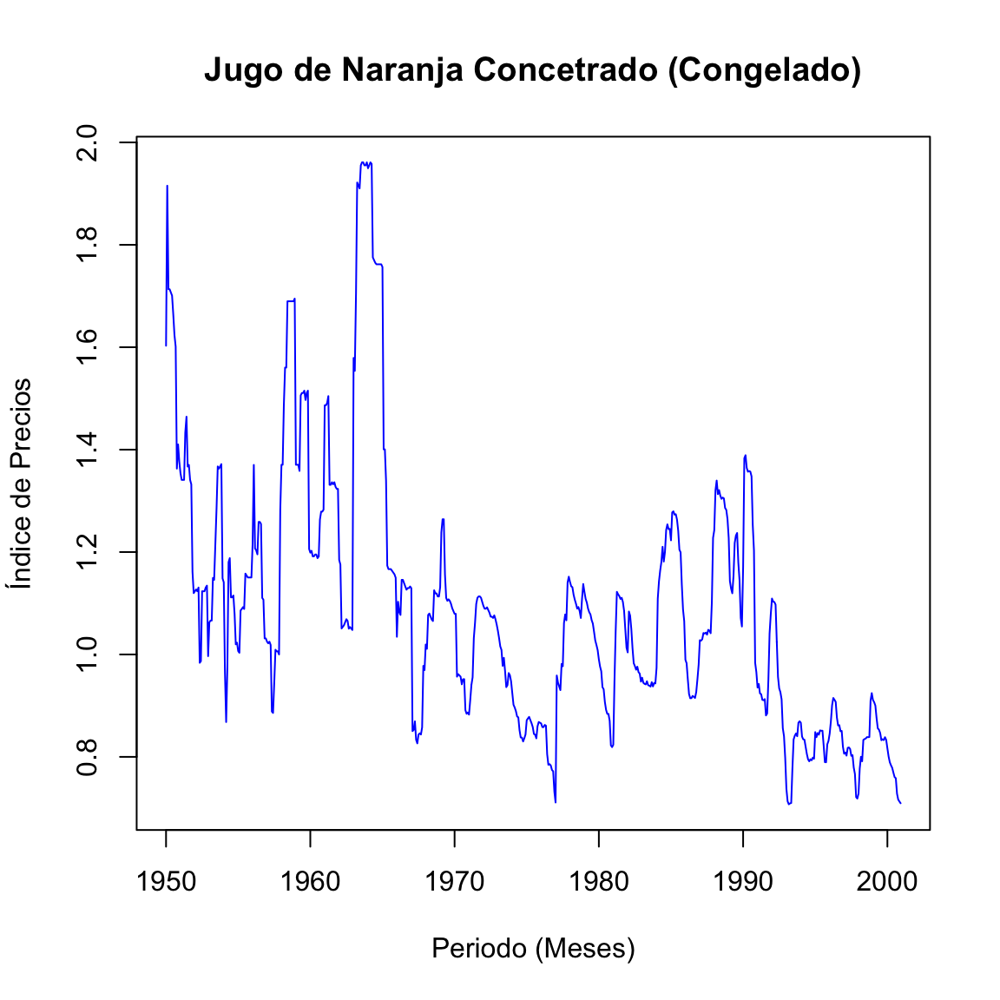
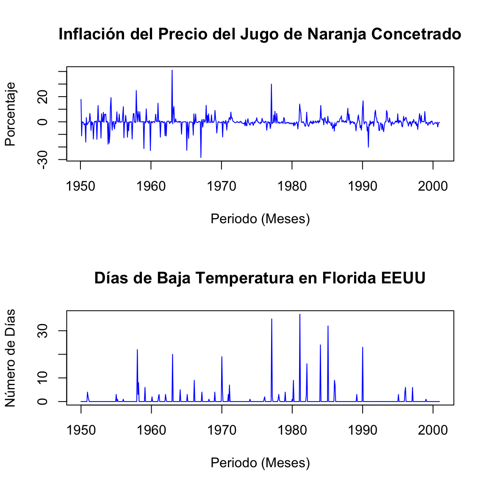
(Intercept) L(fdd, 0:12)0 L(fdd, 0:12)1 L(fdd, 0:12)2
(Intercept) 6.179201e-02 -2.753452e-03 -4.189257e-03 -2.197886e-03
L(fdd, 0:12)0 -2.753452e-03 1.942699e-02 -4.543165e-03 8.223062e-04
L(fdd, 0:12)1 -4.189257e-03 -4.543165e-03 7.631884e-03 2.117213e-03
L(fdd, 0:12)2 -2.197886e-03 8.223062e-04 2.117213e-03 3.185734e-03
L(fdd, 0:12)3 -1.009843e-03 1.886794e-03 -4.972575e-04 6.929871e-04
L(fdd, 0:12)4 -3.229846e-03 8.746614e-04 -2.505078e-04 -1.872822e-04
L(fdd, 0:12)5 -2.572566e-03 -4.603579e-05 4.267196e-04 2.149932e-04
L(fdd, 0:12)6 -4.186539e-03 1.407338e-03 -2.808814e-04 1.345613e-04
L(fdd, 0:12)7 -2.664578e-03 1.060326e-04 8.485687e-05 -2.015023e-05
L(fdd, 0:12)8 -2.772301e-03 1.608578e-04 -4.423288e-05 6.055796e-05
L(fdd, 0:12)9 -4.683689e-03 3.641191e-04 3.083498e-04 3.011280e-04
L(fdd, 0:12)10 -2.959640e-03 -4.434252e-04 1.653307e-04 5.894878e-05
L(fdd, 0:12)11 -2.682885e-03 -1.864565e-03 9.086160e-04 1.922447e-04
L(fdd, 0:12)12 5.113136e-05 -2.226151e-03 -1.068820e-03 -2.350612e-06
L(fdd, 0:12)3 L(fdd, 0:12)4 L(fdd, 0:12)5 L(fdd, 0:12)6
(Intercept) -1.009843e-03 -3.229846e-03 -2.572566e-03 -4.186539e-03
L(fdd, 0:12)0 1.886794e-03 8.746614e-04 -4.603579e-05 1.407338e-03
L(fdd, 0:12)1 -4.972575e-04 -2.505078e-04 4.267196e-04 -2.808814e-04
L(fdd, 0:12)2 6.929871e-04 -1.872822e-04 2.149932e-04 1.345613e-04
L(fdd, 0:12)3 2.081291e-03 -1.381797e-04 4.599449e-04 4.912142e-05
L(fdd, 0:12)4 -1.381797e-04 9.327802e-04 7.195908e-05 8.759168e-04
L(fdd, 0:12)5 4.599449e-04 7.195908e-05 9.188847e-04 -3.623854e-05
L(fdd, 0:12)6 4.912142e-05 8.759168e-04 -3.623854e-05 2.113167e-03
L(fdd, 0:12)7 6.078121e-05 2.113466e-04 1.031985e-04 2.736203e-04
L(fdd, 0:12)8 2.437262e-04 2.906821e-04 3.527567e-04 3.613060e-04
L(fdd, 0:12)9 2.312539e-04 6.475546e-04 2.827152e-04 1.403522e-03
L(fdd, 0:12)10 -4.731800e-05 3.492850e-04 7.758813e-05 6.518792e-04
L(fdd, 0:12)11 7.835812e-06 4.963158e-05 2.544544e-04 3.242780e-04
L(fdd, 0:12)12 -5.311668e-04 -2.004157e-04 -2.586477e-04 -9.958728e-07
L(fdd, 0:12)7 L(fdd, 0:12)8 L(fdd, 0:12)9 L(fdd, 0:12)10
(Intercept) -2.664578e-03 -2.772301e-03 -0.0046836890 -2.959640e-03
L(fdd, 0:12)0 1.060326e-04 1.608578e-04 0.0003641191 -4.434252e-04
L(fdd, 0:12)1 8.485687e-05 -4.423288e-05 0.0003083498 1.653307e-04
L(fdd, 0:12)2 -2.015023e-05 6.055796e-05 0.0003011280 5.894878e-05
L(fdd, 0:12)3 6.078121e-05 2.437262e-04 0.0002312539 -4.731800e-05
L(fdd, 0:12)4 2.113466e-04 2.906821e-04 0.0006475546 3.492850e-04
L(fdd, 0:12)5 1.031985e-04 3.527567e-04 0.0002827152 7.758813e-05
L(fdd, 0:12)6 2.736203e-04 3.613060e-04 0.0014035220 6.518792e-04
L(fdd, 0:12)7 2.278074e-04 2.250910e-04 0.0003140350 2.526664e-04
L(fdd, 0:12)8 2.250910e-04 1.152572e-03 0.0006658012 8.115063e-04
L(fdd, 0:12)9 3.140350e-04 6.658012e-04 0.0024623850 1.081565e-03
L(fdd, 0:12)10 2.526664e-04 8.115063e-04 0.0010815650 4.753106e-03
L(fdd, 0:12)11 1.571158e-04 5.696562e-04 0.0007154512 -3.225344e-04
L(fdd, 0:12)12 6.014426e-06 -1.939837e-04 -0.0001961799 8.770549e-04
L(fdd, 0:12)11 L(fdd, 0:12)12
(Intercept) -2.682885e-03 5.113136e-05
L(fdd, 0:12)0 -1.864565e-03 -2.226151e-03
L(fdd, 0:12)1 9.086160e-04 -1.068820e-03
L(fdd, 0:12)2 1.922447e-04 -2.350612e-06
L(fdd, 0:12)3 7.835812e-06 -5.311668e-04
L(fdd, 0:12)4 4.963158e-05 -2.004157e-04
L(fdd, 0:12)5 2.544544e-04 -2.586477e-04
L(fdd, 0:12)6 3.242780e-04 -9.958728e-07
L(fdd, 0:12)7 1.571158e-04 6.014426e-06
L(fdd, 0:12)8 5.696562e-04 -1.939837e-04
L(fdd, 0:12)9 7.154512e-04 -1.961799e-04
L(fdd, 0:12)10 -3.225344e-04 8.770549e-04
L(fdd, 0:12)11 2.695701e-03 3.513506e-04
L(fdd, 0:12)12 3.513506e-04 6.171038e-03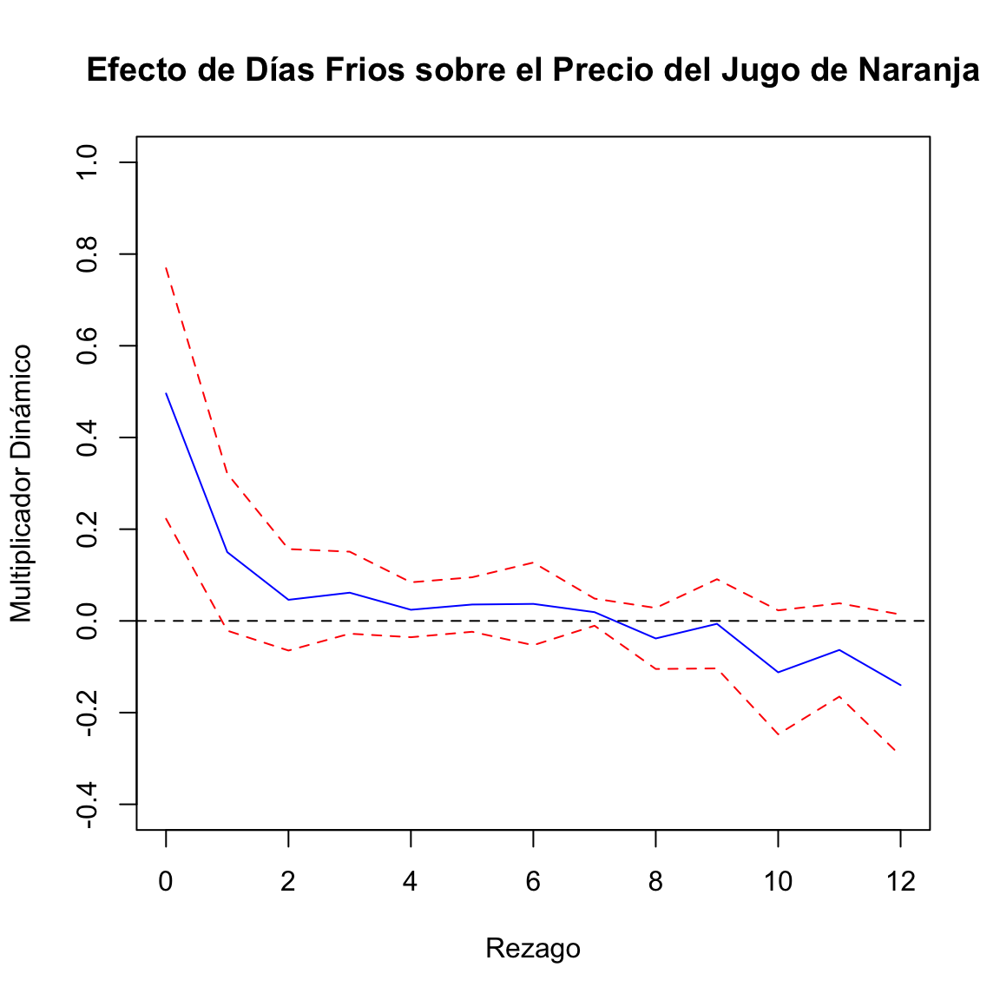
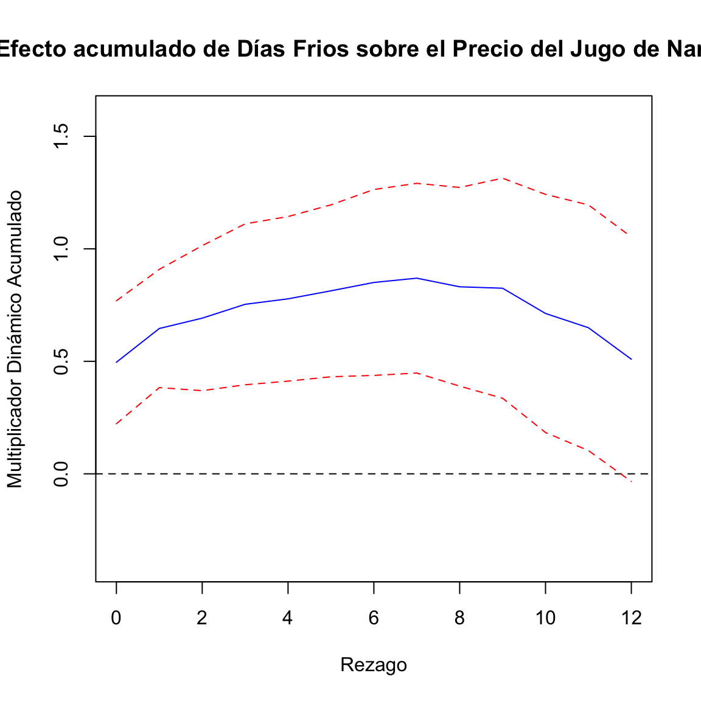
Ingeniería Comercial – Econometría II